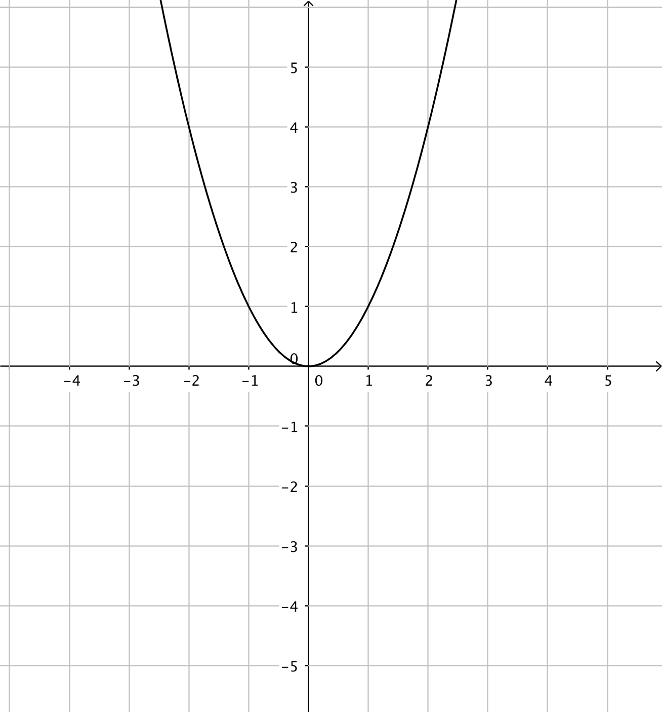
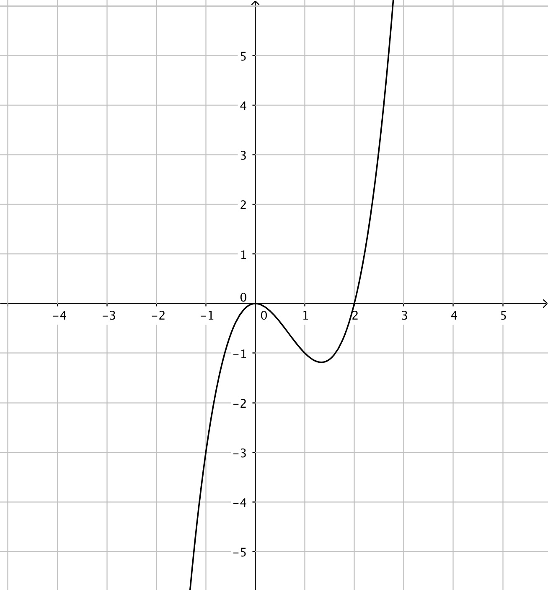
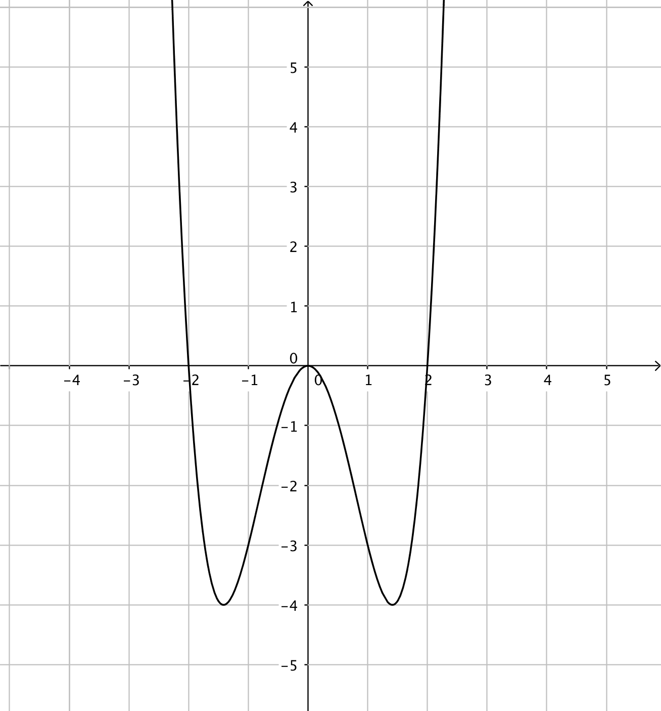
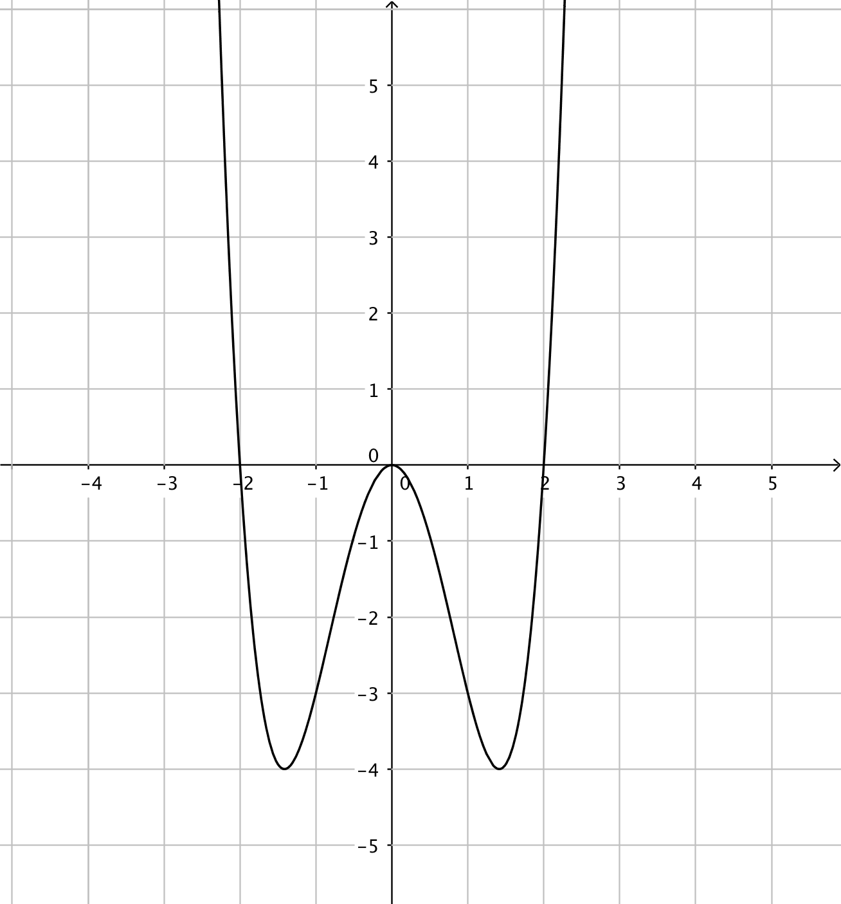
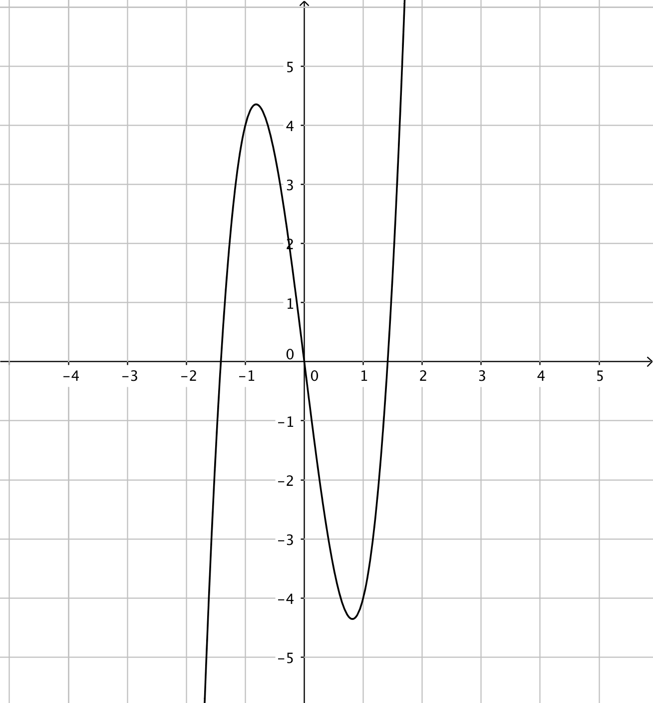
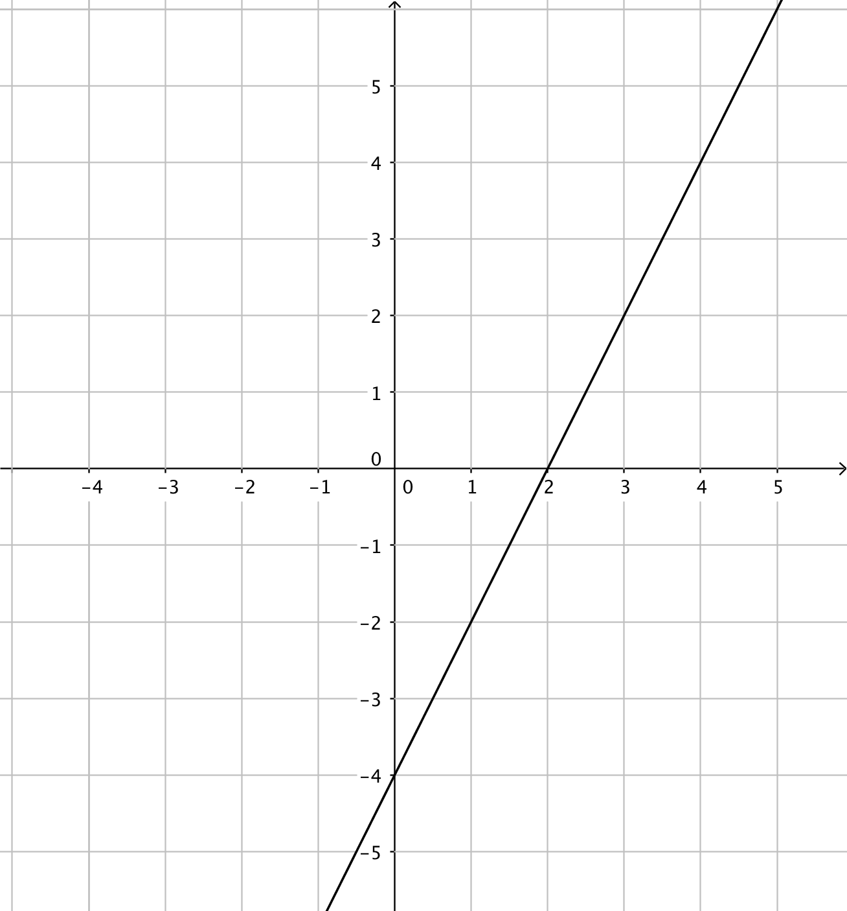
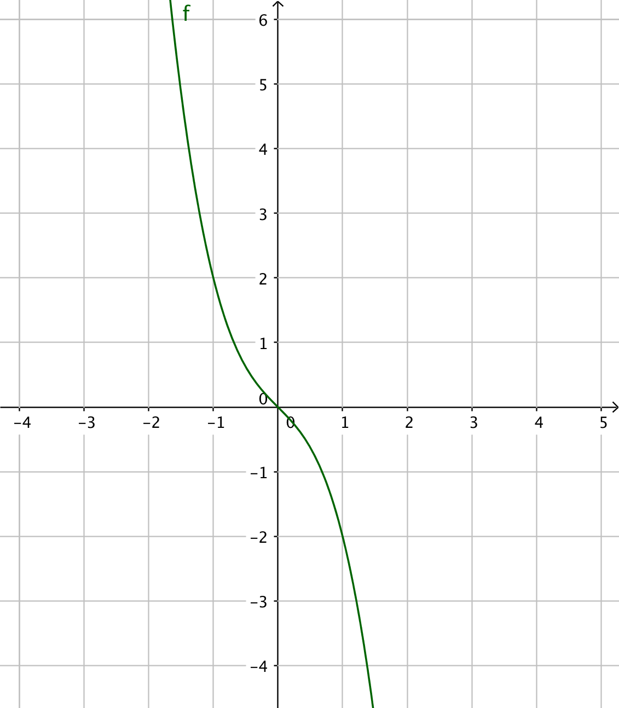

8. Hur en funktion beter sig
Vi tar och undersöker funktionen \( f(x)= x^3-3x^2-1 \) i de punkter där derivatan har värdet 0.
I exemplet ovan märkte vi att funktionen byter riktning i de punkter där derivatan, \( f'(x)=0 \). Vidare märkte vi att då \( f'(x) > 0 \) är funktionen växande och då \( f'(x) < 0 \) är funktionen avtagande.
Vi kan analysera och skissa upp funktioner genom att analysera deras derivatafunktion.
Exempel 1 Bestäm största och minsta värdet för funktionen \( f(x)=x^4-4x^2-2 \). Berätta dessutom när den är avtagande och växande.
Exempel 2 Bestäm största och minsta värdet för funktionen \( f(x)=-x^3+2x^2-1 \) då \( -1\leq x \leq 1 \).
När vi bestämmer hur en funktion beter sig utför vi följande algoritm, recept:
- Derivera funktionen.
- Sök derivatans nollställen, lös ekvationen \( f'(x)=0 \).
- Utgå från derivatans nollställen och bilda ett teckenschema. I teckenschemat gäller att sätta in punkter i derivatafunktionen.
- Från teckenschemat vet du hur funktionen beter sig och var du hittar största och minsta värden. Funktionen är växande då derivatan är positiv och avtagande då derivatan är negativ.
Har du en funktion som är definierad i ett intervall gäller att största och minsta värdet hittar du i de punkter där \( f'(x)=0 \) eller i intervallets ändpunkter.
Vi kan antingen ha lokala eller globala största och minsta värden, maximum och minimum. Lokala maximum och minimum gäller i en omgivning. Globala maximum och minimum gäller för hela funktionen.
All derivering och undersökande av funktioner kan du göra på räknaren. Kom ihåg att räknaren är ett hjälpmedel. För att förstå vad räknaren gör så lönar det sig att kunna undersöka funktioner utan räknare.
Exempel 3 Bestäm största och minsta värdet för funktionen \( f(x)=\dfrac{1}{3}x^3-x+2 \) på räknarprogram.
Lösningen på GeoGebra
Lösningen på TI-CAS
Uppgifter
- Bestäm ordningen på följande instruktioner så att följden blir logisk.
Välj bland följande instruktioner:
Utgå från derivatans nollställen och bilda ett teckenschema.Derivera funktionen.Från teckenschemat vet du hur funktionen beter sig och var du hittar största och minsta värden.Sök derivatans nollställen, lös alltså ekvationen \( f'(x)=0 \).Instruktion Ordning 1. 2. 3. 4. Instruktion Ordning Derivera funktionen. 1. Sök derivatans nollställen, lös alltså ekvationen \( f'(x)=0 \). 2. Utgå från derivatans nollställen och bilda ett teckenschema. 3. Från teckenschemat vet du hur funktionen beter sig och var du hittar största och minsta värden. 4. - Bestäm extremvärden för funktionen \( f(x)=-2x^3+6x \).
\( f'(x)=-6x^2+6 \). Lokala extremvärden i \( x=\pm 1 \).
Lokalt minimum i \( x=- 1 \), värdet är \( -4 \).
Lokalt maximum i \( x= 1 \), värdet är \( 4 \).
- Bestäm extremvärden för funktionen \( f(x)=-2x^3+3x^2 \).
\( f'(x)=-6x^2+6x \). Lokalt minimum i \( x=0 \), värdet är 0. Lokalt maximum i \( x=1 \), värdet är 1.
- Bestäm extremvärden för funktionen \( f(x)=x^4-4x^2+2 \).
\( f'(x)=4x^3-8x \).
Minsta värdet är globalt då \( x=\pm \sqrt{2} \). Värdet är \( -2 \).
Lokalt maximum då \( x=0 \). Funktionsvärdet är 2.
- Funktionerna har du till vänster och derivatafunktionerna till höger. Kombinera rätt funktion med rätt derivatafunktion.
Välj bland dessa:


 
Funktion Derivatafunktion 


  Funktion Derivatafunktion - Teckenschemat för en funktion är följande.
\( \begin{array}{c|ccc} & & -2 & & \\ \hline f'(x) & + & 0 & - \\ \end{array} \)
Beskriv hur funktionen beter sig.
Vi kan fylla ut teckenschemat till följande
\( \begin{array}{c|ccc} & & -2 & & \\ \hline f'(x) & + & 0 & - \\ f(x) & \nearrow & & \searrow \\ \end{array} \)
Vi har en funktion som växer, har ett maxima i \( x = -2 \) och sedan avtar den. Tex en parabel.
- Teckenschemat för en funktion är följande.
\( \begin{array}{c|ccccc} & & 0 & & 1 & \\ \hline f'(x) & - & 0 & + & 0 & - \\ \end{array} \)
Beskriv hur funktionen beter sig.
Vi kan fylla ut teckenschemat till följande
\( \begin{array}{c|ccccc} & & 0 & & 1 & \\ \hline f'(x) & - & 0 & + & 0 & - \\ f(x) & \searrow & & \nearrow & & \searrow \\ \end{array} \)
Vi har en funktion som avtar, växer och sedan avtar den. Vi har ett lokalt minimi i \( x = 0 \) och lokalt maxima i \( x = 1 \).
Globala maximin och minimin saknas.
Vi har en funktion av tredje grad.
- Teckenschemat för en funktion är följande.
\( \begin{array}{c|ccc} & & 3 & & \\ \hline f'(x) & + & 0 & + \\ \end{array} \)
Beskriv hur funktionen beter sig.
Vi kan fylla ut teckenschemat till följande
\( \begin{array}{c|ccc} & & 3 & & \\ \hline f'(x) & + & 0 & + \\ f(x) & \nearrow & & \nearrow \\ \end{array} \)
Vi har en funktion som växer, har en terasspunkt i \( x = 3 \) och sedan växer den.
Den saknar extremvärden.
Funktionen kan vara en tredjegradsfunktion, av typ \( f(x) = x^3 + \text{en siffra} \).
- Teckenschemat för en funktion är följande.
\( \begin{array}{c|ccc} & & 0 & & \\ \hline f'(x) & - & 0 & + \\ \end{array} \)
Beskriv hur funktionen beter sig.
Vi kan fylla ut teckenschemat till följande
\( \begin{array}{c|ccc} & & 0 & & \\ \hline f'(x) & - & 0 & + \\ f(x) & \searrow & & \nearrow \\ \end{array} \)
Vi har en funktion som avtar, har ett minsta värde och sedan växer den.
Funktionen har ett globalt minsta värde i \( x = 0 \).
Funktionen kan vara en jämn potensfunktion, av typ \( f(x) = x^n + \text{en siffra} \), där \( n \) är ett jämt heltal.
- Bestäm när funktionen \( f(x)=x^3-3x^2+1 \) är växande och avtagande.
Derivatafunktionen är \( f'(x)=3x^2-6x \).
\( f'(x)=0 \) då \( x=0 \) eller \( x=2 \).
Växande då \( x < 0 \) och \( x > 2 \) och avtagande då \( 0 < x < 2 \).
- Bestäm extremvärdena för funktionen \( f(x)=-\dfrac{1}{4}x^4+\dfrac{1}{3}x^3+\dfrac{1}{2}x^2 \).
Derivatafunktionen är \( f'(x)=-x^3+x^2+x \).
Derivatans nollställen kommer vi åt via utbrytning \( x(-x^2+x+1)=0 \). \( x=0 \) och \( x=\dfrac{1\pm\sqrt{5}}{2} \).
Globalt maximum då \( x=\dfrac{1+\sqrt{5}}{2} \) som ger värdet \( \dfrac{1}{24}(5\sqrt{5}+13) \).
Lokalt minimmum då \( x=0 \) som ger värdet 0. Lokalt maximum då \( x=\dfrac{1-\sqrt{5}}{2} \) som ger värdet \( \dfrac{1}{24}(-5\sqrt{5}+13) \).
- Bestäm när funktionen \( f(x)=x^4-x^2 \) är växande och avtagande.
Derivatafunktionen är \( f'(x)=4x^3-2x \).
\( f'(x)=0 \) då \( x=0 \) och \( x=\pm\dfrac{1}{\sqrt{2}} \).
Funktionen är växande då \( -\dfrac{1}{\sqrt{2}} < x < 0 \) och \( x > \dfrac{1}{\sqrt{2}} \).
Funktionen är avtagande då \( x < -\dfrac{1}{\sqrt{2}} \) och \( 0 < x < \dfrac{1}{\sqrt{2}} \).
- Bestäm största och minsta värdet för funktionen \( f(x)=x^3-2x^2 \) i intervallet \( [-1,2] \).
Derivatafunktionen är \( f'(x)=3x^2-4x \) som har nollställena 0 och \( \dfrac{4}{3} \).
Eftersom vi har ett intervall jämför vi funktionens värden i intervallets ändpunkter och i de punkter där \( f'(x)=0 \) för att få fram största och minsta värden.
Minsta värdet hittar vi då \( f(-1)=-3 \) och största värdet då \( f(0)=0 \) och \( f(2)=0 \).
- Bestäm största och minsta värdet för funktionen \( f(x)=x^4-2x^2 \) i intervallet \( -1\leq x \leq 2 \).
Derivatafunktionen är \( f'(x)=4x^3-4x \) som har nollställena \( x=0 \) och \( x=\pm 1 \).
Största och minsta värdena hittar vi då \( f'(x)=0 \) eller i intervallets ändpunkter.
Minsta värdet hittar vi i \( f(-1)=-1 \) och \( f(1)=-1 \). Största värdet har vi i \( f(2)=8 \).
- Bestäm största och minsta värdet för funktionen \( f(x)=\dfrac{1}{3}x^3+x^2-2x+3 \) i intervallet \( [-5,2] \).
Derivatafunktionen är \( f'(x)=x^2+2x-2 \) som har nollställena \( -\sqrt{3}-1 \) och \( \sqrt{3}-1 \).
Bägge nollställna är i intervallet.
Eftersom vi har ett intervall jämför vi funktionens värden i intervallets ändpunkter och i de punkter där \( f'(x)=0 \) för att få fram största och minsta värden.
Minsta värdet hittar vi då \( f(-5)=-\dfrac{11}{3} \) och största värdet då \( f(-\sqrt{3}-1) \approx 9,13 \).
- Bestäm extremvärdena för funktionen \( f(x)=-x^3-x \).
\( f’(x)=-3x^2-1 \), som saknar reella nollställen. \( f'(x) < 0 \) för alla tal som betyder att \( f \) är avtagande för alla reella tal. Se grafen av funktionen.

Däremot närmar sig funktionen både \( -\infty \) (minus oändligheten) och \( \infty \) (plus oändligheten). Funktionen har inte ett entydigt största eller minsta värde men värdena närmar sig \( -\infty \) och \( \infty \).